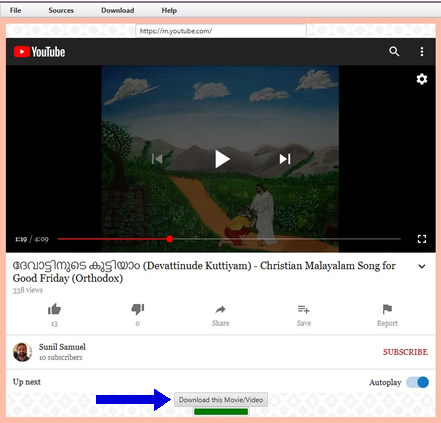

First, make sure to install Python, ffmpeg, and youtube-dl applications. Remember, if you are on Windows, you do not need to install Python.
Once these applications are installed, then go to the Sources or Download menu item.
On Sources menu, either enter a URL or go to a preconfigured URL. You will see a button on the bottom titled Download this Movie/Video. Click on that and it will take you to the download page where you define additional parameters, such as output file name.
On Download menu, click on the type to download, (YouTube, TubiTV, ...) and just enter the URL. It will download the movie and the subtitles.